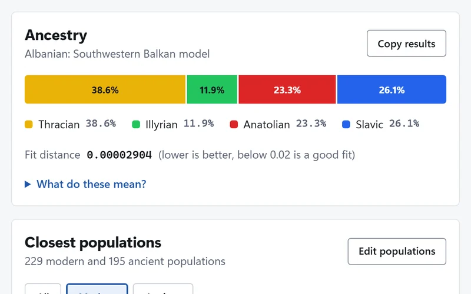
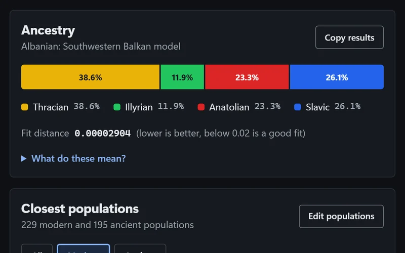
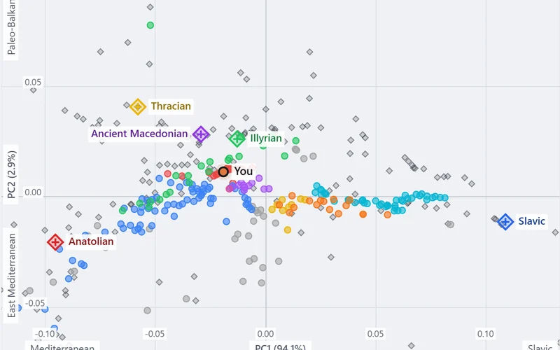
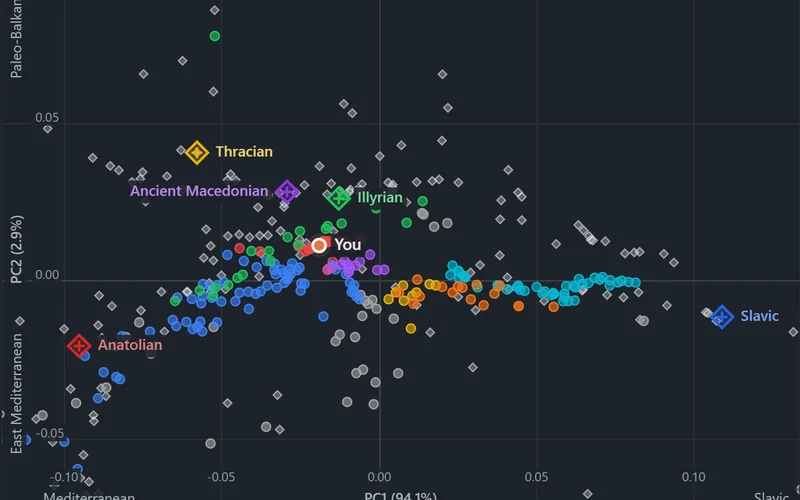
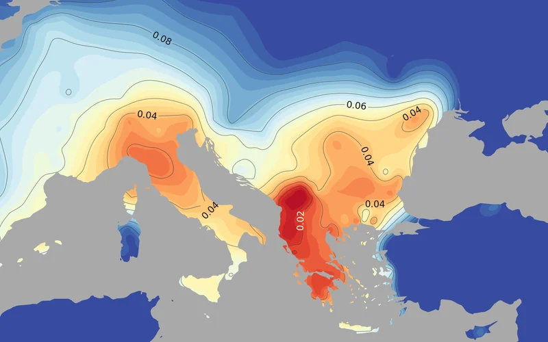

Balkan Ancestry Calculator
Thracian, Illyrian, Ancient Macedonian, Anatolian and Slavic shares, a pre-Slavic profile and the populations closest to you.
A Balkan ancestry calculator, a PCA plot and a genetic distance heatmap for Global25 coordinates. Everything is calculated in your browser.


Thracian, Illyrian, Ancient Macedonian, Anatolian and Slavic shares, a pre-Slavic profile and the populations closest to you.


Shows where you fall among modern Balkan and ancient populations. You can add several samples and save the plot as a picture.

A map of the regions genetically closest to you, for Europe, the whole world or one of nine other areas.
All three work with your Global25 coordinates, a line with your name and 25 numbers. How do I get them?